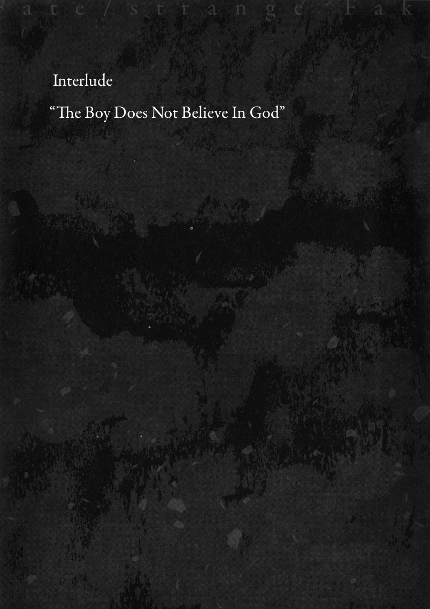

O Garoto Não Acredita em Deus
A mansão dos pântanos.
Voltemos cerca de meio dia. "Olhe, garoto; sua primeira provação já chegou." As palavras do Capitão, que se intitulava uma sombra de um Espírito Heroico da Classe Watcher, fizeram Sigma se virar de imediato. Seu olhar pousou sobre uma garota solitária.
Ela era sua inimiga — um Servo Assassin invocado por outro Mestre —, mas a garota entrou em ação antes que Sigma tivesse tempo de perceber isso. Fechou a distância entre os dois num instante e perguntou, numa voz desprovida de emoção:
"Você é um mago em busca do Santo Graal?"
Sigma sustentou o olhar da garota Assassin e, por um momento, aceitou a própria morte. A presença da morte pairava densa ao redor dela. Era quase como se a própria Energia Mágica daquela garota fosse adaptada a tirar vidas humanas.
Ah, entendeu Sigma na mesma hora, então é assim que é um Servo de verdade. Todos os músculos do corpo gritavam para que ele corresse, mas os instintos gravados em seus Circuitos Mágicos e em seu cérebro ainda imaturos respondiam que correr não serviria de nada. Se desse uma única resposta errada, perderia a vida. Depois de um dia inteiro conversando, ainda não conseguira descobrir nada sobre seu próprio Servo, "Watcher", mas esta garota, pensou Sigma friamente, era genuinamente simples e direta.
Se lutasse, morreria. Uma resposta simples. Os instintos e a experiência que obtivera ao se debater por tantas batalhas reconheciam a força da garota diante dele. Sendo esse o caso, não tinha escolha senão se abandonar ao destino. Sigma aceitou a morte de forma simples e natural.
Aceitar a morte, porém, não significava abrir mão da vida. Sua probabilidade de morrer naquela situação apenas era "maior do que quando andava por aí normalmente". Sigma continuou pensando com calma em um modo de sobreviver. Talvez o fato de que, momentos antes, a autoproclamada sombra que se chamava Capitão tivesse lhe dito para "continuar lutando contra Deus" e "jamais aceitar o destino" também tivesse alguma relação com isso.
Em todo caso, embora o garoto aceitasse que estava à beira de um precipício, infinitamente perto da morte certa, ele jamais parou de quebrar a cabeça em busca de uma saída.
Então, quando a garota Assassin se cansou de esperar e estava prestes a repetir a pergunta, ele enfim deu sua resposta.
"...Isso provavelmente está meio certo." "Meio?" "Como mago, eu sou meia-boca. Alguns até me desprezam como alguém que só usa magia. Quanto a buscar o Santo Graal, ainda estou dividido sobre se deveria fazê-lo."
Assassin se calou. Agora era a vez de Sigma fazer uma pergunta. "Agora eu gostaria que você respondesse à minha pergunta. O que pretende decidir com base na minha resposta?" "Se você é ou não um inimigo." "Eu não quero hostilidades. Seria possível negociar com seu Mestre?" "...Eu não tenho Mestre."
Uma Energia Mágica assassina transbordou do corpo da garota Assassin. Sigma ainda pensava que devia ter feito uma pergunta que não deveria quando o Capitão se intrometeu.
"O que foi que eu lhe disse, garoto? Se você estivesse usando o poder do Watcher, não enfiaria o pé na boca assim. Essa garota é Assassin, tudo bem, mas foi invocada por um sugador de sangue. Matou o Mestre uma vez, mas não funcionou. Então cortou os laços. Por que não tenta uma mentira? 'Sou um matador especializado em vampiros', algo assim?"
"Sou eu quem está conduzindo a negociação", retrucou Sigma ao Capitão, pensando por que ele estava berrando tanto no meio daquilo. "Fique quieto."
Suas palavras, porém, trouxeram um olhar desconfiado ao rosto de Assassin. "Com quem você está falando?" "?" "...Um Servo? Você também falou do meu Mestre. Como eu pensei, você é um participante da Guerra do Santo Graal...!"
Assassin saltou vários metros para trás num instante e cravou em Sigma uma animosidade penetrante. Sigma já se preparava, vendo que negociar seria impossível, quando ouviu atrás de si a voz do garoto de asas mecânicas.
"Ah, foi mal. Parece que ninguém te contou... O único que pode nos ver ou ouvir nossas vozes é você, Mestre do Watcher. Somos só sombras pipocando direto no seu cérebro por influência do Watcher."
Eu queria que tivessem me contado isso primeiro, resmungou Sigma mentalmente. Ainda assim, manteve a cabeça fria. Esforçou-se para observar os movimentos de Assassin, mesmo enquanto o cérebro processava várias linhas de pensamento ao mesmo tempo — o que Assassin faria? Ele teria chance de evitar? Daria para usar a mesa e as cadeiras próximas como cobertura? Infelizmente, o corpo inteiro dela estava envolto numa túnica negra, e ele não conseguia prever as ações a partir do movimento dos músculos ou das articulações.
Sigma estava no processo de traçar uma rota de fuga em sua cabeça quando os lábios de Assassin se moveram.
"...Zabaniya..."
No mesmo instante, a voz do Capitão ecoou. "Lá vem o cabelo dela. Fique esperto." No momento em que Sigma compreendeu o sentido daquelas palavras, cabelos realmente se estenderam das sombras sob o capuz de Assassin, tentando se enrolar em sua traqueia. Sigma desviou por um triz, e os olhos de Assassin se estreitaram. Pelo visto, ela não esperava que ele fosse capaz de se esquivar. Na prática, sem o aviso do Capitão, ele não teria sido rápido o bastante, e aqueles cabelos teriam se fechado em seu pescoço.
Ao ver os fios arrancarem um pedaço da coluna para a qual saltara, Sigma teve certeza de que acabara de escapar da "morte certa". Ao mesmo tempo, outra sombra — o garoto com o cajado de serpente — lhe chamou.
"Ela tem mais de dez Fantasmas Nobres e consegue usar mais de um ao mesmo tempo, mas fica imóvel por um instante quando usa um novo. Acho que mirar nessa abertura é a sua melhor chance."
Ela sequer precisa usar Fantasmas Nobres para matar alguém do meu nível? pensou Sigma enquanto desviava da investida incessante daqueles fios de cabelo.
"Contra você, não", respondeu o Capitão com a voz soando em sua cabeça. "Ela está em guarda contra um ataque de Servo. Claro, nós, sombras, não temos como lançar um."
Uso múltiplo simultâneo, pensou Sigma, ouvindo o riso abafado do Capitão. Isso significa que ela ativou um Fantasma Nobre permanentemente ativo, como esse cabelo, para se proteger enquanto dispara uma técnica de uso único... Se ela tem um Fantasma Nobre ofensivo permanente, então e quanto a um defensivo...?
"Ela tem. Um Fantasma Nobre que a protege transformando sua pele em um cristal especial." Assim que ouviu a voz do garoto do cajado de serpente atrás de si, Sigma arregalou os olhos para além de Assassin e gritou:
"Agora! Esfaqueie-a, Chaplin!"
Assassin girou o corpo, levantando a guarda diante do que soara como uma ordem de ataque. "...Zabaniya...!" A palavra "esfaqueie" sugeria um ataque físico. Ela invocou o Fantasma Nobre, pronta para lidar com qualquer lâmina... mas não havia ninguém ali, e ela não sentia perturbação alguma na Energia Mágica.
Quando percebeu que aquilo era uma armadilha e se virou de volta para Sigma, encontrou bem diante dos olhos um tubo preto com vários furos abertos. No instante em que tentou afastá-lo com suas lâminas de cabelo, o cilindro se abriu, e uma luz mais ofuscante que o sol do auge do verão explodiu dali.
Sigma saltou para fora ao mesmo tempo que arremessava a granada de atordoamento M84 em Assassin, quebrando ruidosamente uma janela no processo. O estrondo e o clarão vieram logo em seguida, mas nessa altura ele já estava em queda. O quarto em que Sigma e Assassin estavam ficava no segundo andar, mas ele corrigiu o corpo no ar com habilidade e aterrissou com a leveza de um gato.
Não posso esperar ferir os olhos ou tímpanos de um Espírito Heroico com uma granada de atordoamento física, mas isso deve distraí-la por um instante.
Apaguei minha presença. Agora devo me ocultar por um tempo e... Sigma se pôs de pé, torcendo para que a oponente não dispusesse de magia nem de habilidades de detecção de presença. O que seus olhos encontraram, porém, foi inacreditável.
Viu uma mulher caída no chão, pressionando as mãos contra os ouvidos, olhando para o quarto onde a granada tinha estourado. Pela roupa, parecia uma civil, mas sua presença do lado de fora da mansão dos pântanos naquela hora era antinatural. Poderia ser a Mestre de Assassin, a tal "vampira"?
"Errado", soou atrás dele a voz do Capitão. "Ela não é a Mestre de Assassin. É só uma pobre, pobre mocinha que acabou arrastada para a Guerra do Santo Graal."
"..." As "sombras" não haviam mentido para ele até então, pelo menos, e não tinham motivo para isso. Com base nas informações que recebia do suposto "Watcher", que observava tudo do alto, Sigma identificou provisoriamente a garota a poucos metros à frente como uma civil. E a atitude que tomou em relação àquela "civil arrastada para a guerra" foi...
"Corra! Se ficar aqui, vai acabar envolvida na batalha!"
Ele gritou numa voz sem emoção, e foi só isso. "..." O arrependimento o atravessou assim que as palavras saíram. O que eu estou fazendo? Esse grito acabou de entregar minha posição a Assassin. Se vivesse de acordo com o treinamento recebido na infância, a resposta correta teria sido eliminar a testemunha no ato ou usá-la como isca para ocultar a própria posição.
...Então Watcher já está começando a me influenciar.
"Ei, não saia jogando a culpa nos outros, irmão." Sigma conseguia ouvir atrás de si a voz despreocupada de uma "sombra". Ignorou-a e saiu correndo na direção da garota.
"Tem um invasor entrincheirado naquela casa. Eu vou servir de isca, então você precisa se apressar e..." Antes que Sigma terminasse de falar, uma figura negra surgiu entre ele e a garota. No exato momento em que Assassin ia desferir um golpe com a mão em lâmina contra Sigma, um braço coberto por uma jaqueta de couro apareceu ao lado dela e a conteve.
Assassin lançou um olhar silencioso ao dono do braço. O homem de cabelos loiros com mechas vermelhas e jaqueta de couro sorriu de volta.
"Aquele golpe não parecia apontado para um ponto vital. Você não pretende matá-lo?" "...Este mago não demonstrou intenção de me matar. Ainda não consigo determinar se devo matá-lo ou não. Como é um Mestre na Guerra do Santo Graal, porém, ao menos é necessário deter seus movimentos", respondeu Assassin. O homem da jaqueta de couro voltou os olhos para Sigma.
"Não sei se é por aí. Quando viu Ayaka, ele também não mostrou hostilidade. Seria natural concluir que ela é a Mestre de Assassin."
"..." Assassin tornou a se calar. O loiro a ignorou e, enquanto ajudava a pôr de pé a garota a quem chamara de Ayaka, dirigiu uma pergunta a Sigma.
"Sou um Servo manifestado na Classe Saber. Prazer em conhecê-lo." Depois de revelar suas informações pessoais com naturalidade, o homem continuou com um sorriso destemido. "Por enquanto, se não se importa, gostaria que nos ouvisse. Se desejar lutar, bem, estamos numa Guerra do Santo Graal, então eu estaria disposto a aceitar, mas..."
Sigma observou o homem com cautela, sem saber quais eram suas intenções. Uma das "sombras", porém, pousou uma mão em seu ombro.
"Deixe para lá", aconselhou-o a velha sombra vestida com algo que lembrava a Sigma um templo japonês.
"..." "O homem diante de você provavelmente é rápido o bastante para desviar dos disparos desse 'fuzil de assalto', ou qualquer que seja o nome que dão a isso. Do jeito que você está, não há a menor esperança de vitória. Se, ainda assim, quiser se debater através da morte certa, se quiser desafiá-lo como uma provação, eu não o impedirei."
A maneira de falar da sombra, como se Sigma tivesse alguma chance no futuro, o deixou intrigado. No fim, porém, ele soltou um longo suspiro e saudou o homem que se chamava Saber.
"Há quartos de hóspedes. Vou mostrar o caminho."
Sigma ainda não entendia o que estava acontecendo quando seguiu na direção dos quartos de hóspedes. O Capitão caminhava ao seu lado com uma expressão pensativa.
"Ainda assim, garoto, tenho certeza de que você queria gritar o nome plausível de algum Espírito Heroico, mas por que justamente um ator — e, ainda por cima, de uma era mais recente do que a minha?"
Ele devia estar falando do nome que Sigma gritara há pouco para enganar Assassin. Pela total ausência de reação do trio que caminhava atrás deles, Sigma confirmou que as vozes das "sombras" realmente só eram audíveis para ele. Pensou por um instante antes de responder ao Capitão em voz baixa.
"...Foi só o primeiro grande homem que me veio à mente." "...Entendo. Então você gosta de comédias clássicas, é?" O Capitão conteve uma risada. Presumivelmente o mundo lhe concedera conhecimento sobre Charlie Chaplin por meio de "Watcher". Enquanto desaparecia, o garoto do cajado de serpente lançou a Sigma um olhar de compaixão afetuosa.
"Nesse caso, vamos trabalhar para que você consiga terminar esta guerra com um sorriso."
Sigma murmurou algo em resposta e, sem dizer mais nada, apressou o passo. Assistia a filmes de comédia repetidas vezes. Se o pressionassem, teria de admitir que gostava deles. Que os admirava. Ainda assim, se alguém lhe perguntasse se alguma vez já rira de coração, Sigma não seria capaz de dizer que sim.
Ele não conseguia imaginar a si mesmo com um sorriso verdadeiro — o tipo de sorriso que Saber lhe mostrara mais cedo. Aquilo tinha sido um sorriso que parecia encontrar prazer no mundo inteiro. Como um Espírito Heroico, que continuava lutando mesmo depois da morte, podia usar um sorriso assim? Sigma podia se perguntar, mas não conseguia chegar a uma resposta, e por isso silenciou o próprio coração. O tempo todo pensando que inveja e anseio por pessoas capazes de sorrir não lhe serviam para nada agora.
Ele sequer tinha o direito de sorrir, em primeiro lugar? Com dúvidas assim na cabeça, estava prestes a pôr os pés em mais uma provação. Tudo isso enquanto sentia uma irritação vaga diante do fato de que, apesar do contrato com Watcher, que afirmava ver através de tudo, ele não conseguir ver sequer através do próprio coração.
Mais uma vez, pensou Sigma. Ele não acreditava em nada. Nem em deuses, nem em budas, nem sequer em demônios. Pensou que talvez, se se devotasse a um deles, pudesse ser capaz de sorrir... só para perceber que, como nem sequer acreditava em si mesmo, não tinha nada a oferecer. Por mais que tentasse, Sigma não conseguia encontrar dentro de si qualquer coisa digna de ser oferecida.